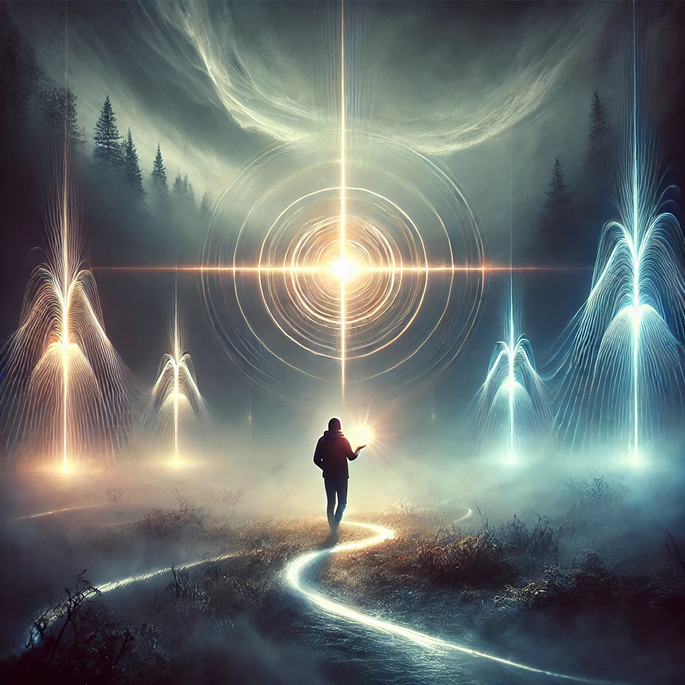

A distant light cuts through the mist, pulsing rhythmically like a heartbeat. You feel an undeniable pull toward it, the compass in your hand aligning with the beacon’s glow. As you step closer, the light grows brighter, illuminating your path through the shifting landscape.
The beacon is not merely a guide; it feels alive, resonating with your own energy. The voice of the unseen speaks softly, almost as if in harmony with the light:
“The beacon calls not to lead, but to reflect your own illumination. By following it, you follow yourself. What will you uncover when you reach its source?”
The path splits into three glowing trails, each leading toward the beacon but offering a different journey.

Which path will you take?